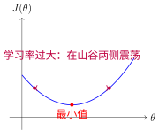
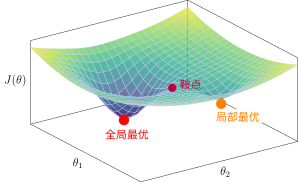
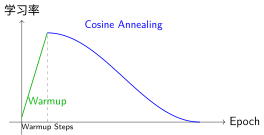

Gradient Descent and Optimization Algorithms#
Descending a Mountain Along the Steepest Direction#
Imagine you are lost on a mountain and want to descend to the valley:
Current position: current parameter value \(\theta_t\)
Steepest descent direction: negative gradient direction (the steepest downhill direction under your feet)
Step size: learning rate \(\eta\) (how large a step you take)
Goal: reach the bottom of the valley (minimum loss \(L\))
Once neural network training is formulated as an optimization problem, we need to find the minimum point of the loss function. Gradient descent is the iterative algorithm used to solve this problem.
Core idea: At the current position, take a small step along the direction of gradient descent (the direction in which loss decreases fastest).
where \(\eta\) is the learning rate (step size), and \(\nabla_\theta J(\theta)\) is the gradient of the loss function with respect to the parameters.

Gradient Descent: Gradually Approaching the Minimum from the Initial Point
Importance of the Learning Rate#
The choice of learning rate is critical:
Learning Rate |
Effect |
Analogy |
|---|---|---|
Too small |
Extremely slow convergence |
Baby steps |
Appropriate |
Fast convergence |
Normal walking |
Too large |
Oscillation / divergence |
Giant leap, may overshoot the valley |

Learning Rate Too Large Causing Oscillation
Variants of Gradient Descent#
In Gradient Descent and Optimization Algorithms, we update parameters based on the gradients computed by Backpropagation Algorithm. Depending on how much data is used to compute the gradient, there are three variants:
Batch Gradient Descent (Batch GD)#
Computes gradients using all data:
Characteristics:
Accurate gradient estimation, stable convergence
High computational cost per iteration, unsuitable for large datasets
Stochastic Gradient Descent (SGD)#
Computes gradients using a single sample at each step:
Characteristics:
Fast computation, suitable for online learning
Noisy gradients, unstable convergence
Noise may help escape local optima
Mini-batch Gradient Descent (Mini-batch GD)#
Computes gradients using a mini-batch of samples (typically 32–256):
Characteristics:
Balances computational efficiency and stability
Can leverage GPU parallel computing
Most commonly used in deep learning
Advanced Optimization Algorithms#
Loss Landscape: Optimization Terrain Shaped by Loss Functions#
The Loss Landscape describes the shape of Loss Functions in parameter space. Imagine a high-dimensional mountainous terrain: valleys represent regions of low loss, while peaks represent regions of high loss.
In deep learning, this landscape is usually non-convex, containing:
Local optima: local valleys (shallow pits)
Global optimum: the deepest valley (the optimal solution)
Saddle points: saddle-shaped points (very common in high-dimensional spaces)

Loss Landscape: Local Optima vs. Global Optimum
Key Observations:
The global optimum is significantly deeper than the local optimum (the red point is far below the orange point)
The two optima are separated by a saddle point (purple)
Optimization algorithms need to “cross over” saddle points to move from a local optimum to the global optimum
Detailed View of Saddle Points:
A saddle point resembles a horse saddle—it is a minimum along one direction and a maximum along another:

Saddle Point: Saddle Shape
Special Circumstances in Deep Learning:
In high-dimensional spaces, saddle points are much more common than local optima
Noise in stochastic gradient descent helps escape local optima and saddle points
Modern networks usually find good enough solutions even if they are not globally optimal
Momentum: Accumulating Velocity to Overcome Obstacles#
Intuition: Imagine rolling a snowball down a hill; it accumulates momentum, rolls faster and faster, and can roll over small potholes. In a loss landscape, momentum helps us push through saddle points and flat regions.
Principle: Introduce a velocity variable to accumulate historical gradients:
Understanding Momentum Step by Step:
Step 1: Understand the velocity variable \(v_t\)
In standard SGD, we update parameters directly using the gradient: $\(\theta_{t+1} = \theta_t - \eta \cdot \nabla_\theta J(\theta_t)\)$
This is equivalent to completely re-deciding the direction at every step, without remembering the path taken previously.
Momentum introduces a velocity variable \(v_t\), effectively adding a “memory” to the optimization process—remembering previously accumulated movement trends.
Step 2: Interpret the velocity update formula
This formula means: New velocity = Retained old velocity + Current gradient
Formula Details:
Symbol |
Meaning |
Dimension |
Intuitive Understanding |
|---|---|---|---|
\(v_{t+1}\) |
Velocity at step \(t+1\) |
Same as parameters |
“Step vector” to be taken in the next step |
\(\gamma\) |
Momentum coefficient |
Scalar (0–1) |
Magnitude of inertia, typically 0.9 (retaining 90% of old velocity) |
\(v_t\) |
Velocity at step \(t\) |
Same as parameters |
Previously accumulated movement trend |
\(\nabla_\theta J(\theta_t)\) |
Current gradient |
Same as parameters |
Steepest descent direction at the current position |
Core Insights:
\(\gamma = 0\) (no momentum): \(v_{t+1} = \nabla_\theta J\), degenerates to basic SGD
\(\gamma = 0.9\) (with momentum): New velocity = 90% old velocity + 10% new gradient
Step 3: Interpret the parameter update formula
Difference from SGD:
SGD: \(\theta_{t+1} = \theta_t - \eta \cdot \nabla_\theta J\) (uses only current gradient)
Momentum: \(\theta_{t+1} = \theta_t - \eta \cdot v_{t+1}\) (uses accumulated velocity)
Why does this reduce oscillation?
Imagine walking in a ravine:
SGD: Looking only at your feet each step, taking a step left, finding the right side lower, taking a step right, oscillating back and forth across the ravine walls
Momentum: With inertia, walking left accumulates leftward velocity. Even if the right side is slightly lower, inertia carries you forward leftward until the left side becomes significantly higher than the right, at which point it gradually turns
Expanding the Formula to See the Essence:
If we expand the recursive definition of \(v_t\):
where \(g_i = \nabla_\theta J(\theta_i)\) is the gradient at step \(i\).
Key Finding: Current velocity is a weighted average of historical gradients, where earlier gradients have smaller weights (exponentially decaying by \(\gamma^k\)).
Analogy:
Standard SGD: Re-decides direction at every step, making it easy to oscillate back and forth across ravine walls
Momentum: Like a ball rolling down a hill, possessing inertia; accelerates in consistent directions and decelerates when directions reverse, naturally reducing oscillation
Effects:
Accelerates convergence (especially when gradient directions are consistent)
Reduces oscillation (momentum cancels out when gradient directions change)
Helps escape local optima
Adam (Adaptive Moment Estimation)#
Adam [KB15] is currently one of the most widely used optimization algorithms, combining the advantages of Momentum and RMSprop.
Intuition: Adjust the learning rate individually for each parameter. Parameters updated frequently receive smaller learning rates, while sparsely updated parameters receive larger learning rates.
Principle: Combine first-moment estimation (momentum) and second-moment estimation (adaptive learning rate):
Understanding Adam Step by Step:
Step 1: First-moment estimation (momentum part)
Similar to momentum, this computes the exponential moving average of gradients:
Symbol |
Meaning |
Dimension |
Intuitive Understanding |
|---|---|---|---|
\(m_t\) |
First moment (mean) at step \(t\) |
Same as parameters |
“Average trend” of gradients, smoothed gradient direction |
\(\beta_1\) |
First-moment decay rate |
Scalar (0–1) |
Typically 0.9, retaining 90% of historical information |
\(m_{t-1}\) |
First moment from the previous step |
Same as parameters |
Previously accumulated gradient trend |
\(g_t\) |
Current gradient |
Same as parameters |
Currently computed gradient value |
\((1-\beta_1)\) |
Weight of the new gradient |
Scalar |
New gradient accounts for 10% weight |
Difference from Momentum:
Momentum: \(v_{t+1} = \gamma v_t + \nabla_\theta J\) (weight of new gradient is 1)
Adam: \(m_t = \beta_1 m_{t-1} + (1-\beta_1) g_t\) (weight of new gradient is \(1-\beta_1\))
Adam’s form brings \(m_t\) closer to the true gradient mean (expected value).
Expanding to See the Essence:
This is an exponentially weighted moving average of historical gradients, where more recent gradients receive larger weights.
Step 2: Second-moment estimation (adaptive learning rate part)
Note that \(g_t^2\) here is an element-wise square:
Symbol |
Meaning |
Dimension |
Intuitive Understanding |
|---|---|---|---|
\(v_t\) |
Second moment (uncentered variance) at step \(t\) |
Same as parameters |
Historical average of gradient “magnitude of variation” |
\(\beta_2\) |
Second-moment decay rate |
Scalar (0–1) |
Typically 0.999, larger than \(\beta_1\) |
\(g_t^2\) |
Element-wise square of gradient |
Same as parameters |
Magnitude information of gradients |
Core Insight: \(v_t\) tracks the “activity level” of each parameter’s gradient:
Gradients consistently large → \(v_t\) is large
Gradients consistently small → \(v_t\) is small
Why use squares?
Squaring eliminates signs (positive or negative) and retains only magnitude information. We want to know “how large” the gradients are, rather than “which direction” they point.
Step 3: Bias Correction
Why is correction needed?
Problem: Initially \(m_0 = 0, v_0 = 0\)
Bias in early steps:
Step 1: \(m_1 = (1-\beta_1) g_1\), which is about \((1-\beta_1)\) times smaller than the true mean
Step 2: \(m_2 = \beta_1(1-\beta_1)g_1 + (1-\beta_1)g_2\), still biased
Correction Principle:
If \(m_t\) estimates \(E[g]\), then \(E[m_t] = (1-\beta_1^t) E[g]\)
Dividing by \((1-\beta_1^t)\) yields an unbiased estimate
Symbol |
Meaning |
Calculation Method |
|---|---|---|
\(\hat{m}_t\) |
Bias-corrected first moment |
\(m_t / (1-\beta_1^t)\) |
\(\hat{v}_t\) |
Bias-corrected second moment |
\(v_t / (1-\beta_2^t)\) |
\(t\) |
Current timestep |
Number of training iterations |
Correction Effect:
When \(t\) is small (early stage): \(1-\beta_1^t\) is small, the divisor is small, and the amplification effect is significant
When \(t\) is large (late stage): \(\beta_1^t \approx 0\), \(1-\beta_1^t \approx 1\), almost no correction is needed
Example (\(\beta_1 = 0.9\)):
\(t=1\): Correction factor \(1/(1-0.9) = 10\), amplified 10-fold
\(t=10\): Correction factor \(1/(1-0.9^{10}) \approx 1.5\), amplified 1.5-fold
\(t=100\): Correction factor \(\approx 1.0\), virtually no correction
Step 4: Parameter update (the essence of adaptive learning rates)
Element-wise interpretation:
For the \(i\)-th parameter \(\theta^{(i)}\):
Symbol |
Meaning |
Role |
|---|---|---|
\(\hat{m}_t^{(i)}\) |
Smoothed gradient for the \(i\)-th parameter |
Determines update direction |
\(\sqrt{\hat{v}_t^{(i)}}\) |
Gradient RMS for the \(i\)-th parameter |
Determines step size scaling |
\(\epsilon\) |
Numerical stability constant |
Prevents division by zero, typically \(10^{-8}\) |
\(\eta\) |
Global learning rate |
Overall step size control |
Core Insight - Adaptive Learning Rate Mechanism:
Suppose there are two parameters:
Parameter A (large gradient fluctuations):
Historical gradients: [10, -8, 12, -10, 9] (wild swings)
\(\hat{m}_t \approx 2.6\) (average gradient)
\(\hat{v}_t \approx 100\) (average squared gradient)
\(\sqrt{\hat{v}_t} \approx 10\)
Update step size: \(\eta \cdot 2.6 / 10 = 0.26\eta\) (step size is scaled down)
Parameter B (small gradient fluctuations):
Historical gradients: [0.01, -0.02, 0.015, -0.01, 0.012] (minor fluctuations)
\(\hat{m}_t \approx 0.009\) (average gradient)
\(\hat{v}_t \approx 0.0002\) (average squared gradient)
\(\sqrt{\hat{v}_t} \approx 0.014\)
Update step size: \(\eta \cdot 0.009 / 0.014 = 0.64\eta\) (relatively larger step size)
Result:
Parameters with large gradient fluctuations → step size automatically becomes smaller (cautious updates)
Parameters with small gradient fluctuations → step size remains relatively larger (bold updates)
Why use \(\sqrt{\hat{v}_t}\) instead of \(\hat{v}_t\)?
The dimension of squared gradient \(g_t^2\) is the square of the original gradient
Dividing by \(\sqrt{\hat{v}_t}\) (RMS, root mean square) cancels the dimension, making the update step size match the dimension of the original gradient
Analogy: Standard deviation \(\sigma = \sqrt{\text{variance}}\), which shares the same dimension as the original data
Hyperparameter Summary:
Parameter |
Recommended Value |
Role |
|---|---|---|
\(\beta_1\) |
0.9 |
First-moment decay rate, controls momentum strength |
\(\beta_2\) |
0.999 |
Second-moment decay rate, controls adaptive sensitivity |
\(\epsilon\) |
\(10^{-8}\) |
Numerical stability |
\(\eta\) |
0.001 (default) |
Global learning rate |
Characteristics:
Combines momentum and adaptive learning rate
Insensitive to hyperparameters, default first choice
Suitable for most deep learning tasks
Algorithm |
Applicable Scenarios |
Characteristics |
|---|---|---|
SGD + Momentum |
Image classification, large models |
Good generalization performance, requires tuning learning rate |
Adam |
Default first choice, NLP, recommendation systems |
Adaptive, fast convergence, easy to use |
AdamW |
Transformers, large models |
Improved weight decay, better performance |
Learning Rate Scheduling: Why Adjust the Learning Rate?#
Core Problem#
Early in training, parameters are far from optimal, requiring a large learning rate to rapidly approach the goal. Later in training, parameters are close to optimal, requiring a small learning rate for fine adjustment to avoid oscillating around the minimum.

Fixed Learning Rate vs. Learning Rate Scheduling
Common Learning Rate Scheduling Strategies#

Comparison of Learning Rate Scheduling Strategies
1. 步长衰减（Step Decay）#
Strategy: Multiply the learning rate by a decay factor (e.g., 0.1) every N epochs
Applicable Scenarios:
Traditional image classification tasks (standard for ImageNet training)
Manually reducing learning rate when validation loss stops decreasing
::
Characteristics: Stepwise reduction, simple and effective, but requires preset decay timing.
2. 指数衰减（Exponential Decay）#
Strategy: Exponentially decay learning rate every epoch
Applicable Scenarios:
Smooth, continuous decay is required
When training for a large number of epochs
::
3. 余弦退火（Cosine Annealing）#
Strategy: Learning rate decays along a cosine curve from initial value to near 0
Applicable Scenarios:
Modern Transformer models (BERT, GPT, etc.)
Works even better when combined with Warmup
scheduler = optim.lr_scheduler.CosineAnnealingLR(optimizer, T_max=100)
4. 预热（Warmup）#
Problem: At the beginning of training, parameters are randomly initialized; gradients can be large and unstable, so a large learning rate can cause oscillation.
Strategy: Start with a very small learning rate and linearly increase it to the target learning rate.

Warmup + Cosine Annealing
::
Selection Recommendations#
Strategy |
Recommended Scenarios |
Pros |
Cons |
|---|---|---|---|
Step Decay |
Image classification, CNNs |
Simple and effective |
Requires preset decay timing |
Exponential |
Long-cycle training |
Smooth and continuous |
Decays too quickly |
Cosine |
Transformers, NLP |
Usually best performance |
Relatively complex |
Warmup + Cosine |
Large model training |
Stable + great performance |
Requires tuning two parameters |
PyTorch Practice#
Basic Training Loop
::Learning Rate Scheduling
::
Training Tricks#
Gradient Clipping
Prevents gradient exploding:
loss.backward() torch.nn.utils.clip_grad_norm_(model.parameters(), max_norm=1.0) optimizer.step()
Batch Normalization (BatchNorm)
Stabilizes training, accelerates convergence:
self.bn = nn.BatchNorm1d(num_features)
Early Stopping
Stops training when validation loss stops decreasing, preventing overfitting.
Summary#
Gradient descent is the cornerstone of deep learning training:
Basic Principle: Iteratively update parameters along the negative gradient direction computed by Backpropagation Algorithm
Learning Rate: The most critical hyperparameter; too large causes oscillation, while too small leads to slow convergence
Mini-batch: Balances efficiency and stability, standard in deep learning
Adam: Default first-choice optimizer, adaptive and easy to use
Learning Rate Scheduling: Adjusting the learning rate during training improves performance
Having understood Loss Functions and optimization algorithms, you now master the full deep learning training pipeline. Next, we will review this chapter in Summary and Outlook before moving on to practical chapters.
References
Contributors and Revision History
View detailed revision history
-
e2bc8802026-06-13 - Heyan Zhu: fix: missing bib keys in pdf output -
d7c9da72026-05-12 - Heyan Zhu: docs: update sphinx only filter from not pdf to not latex -
a954ca52026-05-11 - Heyan Zhu: docs: revise and restructure documentation, fix formatting, and move env setup and sphinx guide to a separate appendix section -
f159d562026-05-08 - Heyan Zhu: fix: address complaints from the linter -
b20ef3e2026-04-28 - Heyan Zhu: docs: update pytorch practice section with detailed explanations and code examples -
59126f42026-04-26 - Heyan Zhu: docs(math-fundamentals): update content structure and add citations -
ae2053f2026-04-26 - Heyan Zhu: docs(math-fundamentals): add task-formulations and update related content -
756a7932026-04-25 - Heyan Zhu: docs(math-fundamentals): update content structure and improve explanations